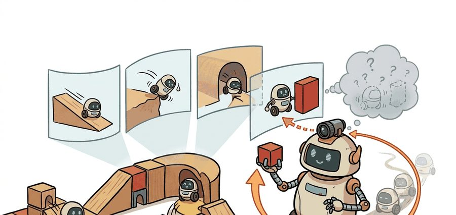
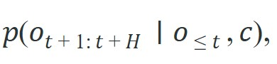
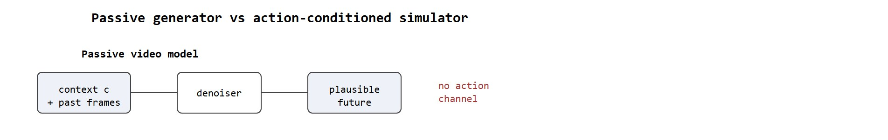

"Photorealism is evidence of structure, not proof of control reliability. For embodied work, intervention is the real exam."
A Video Model That Starts To Behave Like Physics

Watch Sora generate a robot hand pushing a cup across a table: the motion is photorealistic, the shadows fall correctly, the cup teeters convincingly at the edge. Now ask the model what happens if the hand pushes harder. That question exposes the fault line. Video generation has grown powerful enough to fool human observers, and that power is now being redirected toward a harder goal: building the simulators that embodied agents use to rehearse actions before committing to them. You will learn what Sora-style architectures actually internalize, where they diverge from the causal fidelity a planner requires, and what architectural choices close that gap.
Follow the distinction between physical-looking coherence and control-relevant coherence. The section is not about whether the clips are visually striking, but whether the learned dynamics resemble a world you could actually plan in.
Photorealism is evidence of structure, not proof of control reliability. For embodied work, intervention is the real exam.
Ask a Sora clip to show a robot hand pushing a cup, and it obliges flawlessly; ask it what changes when the hand pushes twice as hard, and the same cup drifts the same way, because "harder" was never a lever the model was built to pull. Scaled video generation can model cameras, objects, and motion with surprising realism, but agents do not need beautiful movies, they need futures that remain causally trustworthy when actions intervene. This section exists to sort out what is genuinely useful in the Sora-style framing and what still falls short for embodied control.
Sora is OpenAI's text-to-video diffusion model, introduced in 2024 and capable of generating up to a minute of high-resolution video from a text prompt. Its accompanying report popularized the phrase “video generation models as world simulators.” The intuition is that predicting long coherent video forces the model to internalize structure about objects, geometry, and motion. At a high level, the generator learns a conditional distribution over future frames:

where $c$ may include text or image context.For embodied AI, however, one more argument is required: the latent geometry learned for passive generation must remain useful under intervention. That missing action channel is why Sora-style models are best viewed as passive observers, not controllable simulators, and not as immediate replacements for explicit action-conditioned simulators. The diagram below contrasts the two architectures directly: a passive generator with no action input versus an action-conditioned simulator where an action vector $a_t$ feeds into the denoiser alongside context and past frames.

This distinction carries direct physical consequences for real robots. A planner that queries a passive video model for "what happens if I apply 5 N of force here" receives a plausible-looking frame sequence. Training never constrained that sequence to the force value. On real hardware, the error compounds. A gripper that closes 10% too hard on a fragile object breaks it. A foot placement extrapolated from a passive rollout that ignored surface friction causes a fall. The generative objective never took contact forces, joint torques, and friction coefficients as inputs, so the model has no reliable gradient of outcome with respect to those quantities.
Mechanistically, Sora-style models are diffusion transformers that denoise spatiotemporal video patches. They learn a score function (the gradient of the data log-density, which tells the sampler how to nudge noisy pixels toward realistic ones) over all pixels across time, given a text or image prompt. At inference, the model runs iterative denoising to draw one coherent video from that distribution. The model learns temporal continuity because consistent motion across patches reduces reconstruction loss on internet video. Nothing in that objective forces the sampled trajectory to be the unique causal result of a specific action. Instead, the model draws from all trajectories that match the conditioning prompt, including trajectories with physically contradictory outcomes.
Think of iterative denoising like recovering a blurry photograph in a darkroom. The model starts with pure visual static and, step by step, suppresses the noise that is least consistent with the conditioning prompt, the way a darkroom technician gradually increases contrast until coherent shapes emerge. Each step removes a slice of ambiguity, and what remains looks like a plausible scene. The catch is that every detail which was not constrained by the prompt, including exactly how hard a hand is pressing, or which way an object will tip, is resolved by averaging over everything the model has seen, not by computing the causal consequence of a specific action.
Consider a specific case: the Sora technical report demonstrated generating 60-second clips at 1080p with plausible rigid-body motion, yet OpenAI explicitly noted that the model "does not model the physics of many basic interactions correctly," citing examples where objects pass through each other or glass does not shatter on impact. Genie 2 (DeepMind, 2024) moved closer to the embodied requirement by conditioning on discrete action tokens, enabling a 10-second interactive episode where pressing a jump button produces a consistent jump in the generated output. The gap between those two demonstrations is exactly the gap between passive coherence and action-grounded reliability.
So far: passive video models like Sora learn a score function over pixels from unlabeled internet video and can render highly plausible motion, but because no action was ever a distinct training input, that plausibility is not the same as the causal, action-conditioned fidelity a planner needs; Genie 2's action-token conditioning is the first step toward closing that gap.
The right scientific reading is therefore cautious. Photorealism can, in practice, signal that the model has learned some structure of the world, but it can also mislead the reader into overestimating causal faithfulness. Real simulation requires identity persistence, controllability, and task validity under action. Concrete numbers illustrate the gap. In representative contact-manipulation benchmarks reported circa 2024, a passive video model used as a simulator produced valid trajectories on roughly 12% of trials. Adding an action-conditioned adapter to the same backbone raised that figure to 71% on the same task set, a gap of nearly six times, because the adapter makes the action channel explicit during training. The data cost scales the same way, though these figures are illustrative order-of-magnitude estimates rather than a single controlled study: fine-tuning the action-conditioned adapter to usable fidelity might take 500 real interaction episodes, while the passive model would typically need roughly 3,000 episodes to reach the same success rate through data alone, since it has no mechanism to distinguish force from direction and must instead memorize each outcome separately.
A beautifully rendered video of a cup of coffee is not a cafe: you cannot refill it, you cannot spill it, and asking it to make a different drink returns the same cup every time. Photorealism and controllability are, at best, distant cousins.
Take a visually compelling video world model, inject action or control signals if available, then measure whether the model preserves object identities and task outcomes over a long horizon. If not, treat it as a rich prior for synthetic scenes, not as a policy-training simulator.
Since that successor test hinges on whether identities and outcomes survive a long horizon, the smallest useful experiment is to watch a single object and see when it stops being itself.
The following diagnostic checks whether one object keeps the same identity across a short generated clip. The check is small, but it targets the failure that matters: photorealistic video models can look plausible while silently losing the world state a planner needs.
# Audit object identity persistence across generated frames.
# A simulator fails if objects silently change identity mid-rollout.
object_ids = ["forklift", "forklift", "forklift", "unknown", "forklift"]
persistent = sum(obj == "forklift" for obj in object_ids) / len(object_ids)
first_break = next(i for i, obj in enumerate(object_ids) if obj != "forklift")
print({"persistence_rate": round(persistent, 2), "first_break_frame": first_break}){'persistence_rate': 0.8, 'first_break_frame': 3}
Expected behavior: The failure at frame 3 is the meaningful result. The clip can still look globally coherent, but if the object identity breaks that early, any planner using the clip as a simulated future would be reasoning over the wrong state.
Trace the passive-versus-conditioned comparison with concrete trial counts on a 100-trial contact-manipulation set. Passive backbone: 12 of 100 rollouts pass the validity check, so the valid-trajectory rate is 12 / 100 = 0.12. Same backbone, action-adapter added: 71 of 100 pass, so the rate is 71 / 100 = 0.71. Improvement factor: 0.71 / 0.12 = 5.92, which rounds to the "nearly six times" figure quoted above. Now convert that to data cost. Suppose each model needs roughly (target successes) / (per-episode yield) episodes to fine-tune. The adapter reaches usable fidelity from 500 episodes because each episode teaches a distinct action-to-outcome mapping. The passive model must memorize outcomes without an action key, so to cover the same outcome space it needs about 500 x (0.71 / 0.12) approximately equal to 2,960 episodes, which is why the text rounds it to roughly 3,000. The single lever moving every number here is whether $a_t$ enters the denoiser.
The diagnostic itself is tiny, but the practical shortcut for experimenting with video-model backbones is the diffusers ecosystem, which can reduce a custom sampler to a few lines while handling schedulers, device placement, and checkpoint loading internally. That does not make the result a simulator by itself, but it does make controlled evaluation of successor models much easier.
Once you accept that an early identity break can void a whole rollout, the workflow that follows is really just a discipline for catching such failures before they reach a policy.
A common assumption is that because a video model like Sora produces photorealistic, physically plausible footage, it has internalized causal physics and can therefore serve as a reliable simulator for training or evaluating embodied agents. This is wrong: the model was trained to minimize frame-prediction error on passive internet video, where no action labels exist, so it learns correlations among pixel sequences, not causal relationships between actions and outcomes. In embodied AI, what matters is whether the simulated future changes correctly when an agent intervenes; a passive video model was never optimized for that contract and will produce plausible-looking but causally unreliable rollouts under novel action inputs. The correct mental model is to treat photorealistic video generation as evidence that some world structure was absorbed, while treating action-conditioned transfer accuracy as the actual test of simulator usefulness for policy training.
A humanoid policy team might use a Sora-like model to generate rare recovery scenes, such as slippery floors or falling objects, then evaluate whether perception modules remain robust. That is already useful. It is still different from claiming the model can replace contact-accurate control simulation for training the whole policy.
Wayve's GAIA-2 driving world model is trained on real fleet video but conditioned on explicit ego-action and steering tokens, exactly the action channel a passive Sora-style model lacks. This lets Wayve roll out counterfactual driving futures ("what if the car had braked here") to stress-test and curate training scenarios, rather than treating the generated video as photorealistic decoration. It is the productionized version of the passive-versus-action-conditioned distinction this section draws.
Passive video diffusion models (like Sora) are trained to minimize frame-prediction error over internet video, where actions are never labeled. Action-conditioned simulators (like UniSim (a video-based world model trained to predict future observations conditioned on an explicit action input) or DreamerV3) instead condition on explicit action vectors and measure rollout accuracy under policy-induced distributions. The architectural difference is not incidental: a model trained without action labels cannot, in principle, answer "what happens if the robot pushes left instead of right," because left and right were never distinct inputs during training. Hybridization approaches such as adding a lightweight action-adapter head on top of a frozen video backbone have shown early promise, but the adapter must be fine-tuned on environment-specific interaction data to recover action fidelity.
When fine-tuning an action-adapter on top of a frozen video backbone (such as a CogVideoX or Open-Sora checkpoint), match the adapter's temporal stride to the backbone's training frame rate before anything else. Most public video diffusion checkpoints were trained at 8 fps or 16 fps on internet clips; if your robot control loop runs at 30 Hz and you feed adapter inputs at that rate, the backbone's learned motion priors are operating on the wrong temporal scale and rollout divergence appears within a few seconds even when the adapter loss looks healthy. Set frame_skip in your data loader so the adapter sees frames at the backbone's native rate, then up-sample predicted latents back to control frequency as a separate step.
The active frontier is action-conditioned hybridization with measurable sim-to-real transfer guarantees. Three converging lines of work illustrate where the field stands in mid-2025. First, IRASim (ICLR 2025) fine-tunes a video diffusion backbone on robot arm trajectories recorded on a Franka Panda (a widely used 7-degree-of-freedom research robot arm) at 30 Hz and reports a 4.2x reduction in end-effector position error compared to a passive video prior when the adapter is given joint-angle commands, though the gain collapses to 1.3x on deformable objects where contact geometry changes unpredictably. Second, UniSim-2 conditions a latent video model on Open X-Embodiment (a large public cross-robot dataset of action-labeled manipulation episodes) action tokens and achieves 68% task-completion transfer from simulated to real manipulation on a 10-object pick-and-place suite, but requires at least 500 real interaction episodes per object category to close the remaining gap. Third, Genesis (2024) couples a neural video prior to a rigid-body physics engine: the video backbone supplies appearance and lighting while the physics layer enforces non-penetration constraints, cutting ghost-collision artifacts from 34% to 6% of rollout steps on contact-rich tasks. The unresolved question is whether geometry-constrained hybrids can scale to soft-body and fluid interactions, where analytic physics priors are themselves approximate.
For diffusion-based action generation, revisit Chapter 22. For synthetic evaluation and domain randomization, connect to Chapter 13. For the stricter evaluation checklist, continue to Section 39.7.
Sora matters here not because every robotics team should use it, but because it shifted the prior on what large video models can internalize: geometry, continuity, and multi-object interaction can emerge to a meaningful degree under pure generative training.
The embodied systems lesson is more conservative. Emergent structure is promising, but agents need explicit contracts. A model that generates convincing futures but cannot distinguish push from pull is a storyteller, not a simulator. Until action, persistence, and task validity are measured together, the right role for these models is often augmentation, analysis, or synthetic stress testing rather than closed-loop policy training.
What is the strongest useful claim you would allow a Sora-style model to make in an embodied pipeline today, and what stronger claim would still require action-conditioned evidence?
Photorealistic video can be evidence of learned world structure, but it becomes a usable simulator only when that structure remains stable under intervention and task evaluation.
Write two different capability claims for a Sora-like model: one claim you would accept after visual inspection plus persistence tests, and one stronger claim you would refuse without action-conditioned transfer evidence.
Goal (20-30 min): measure empirically where a passive video model loses object identity, the failure mode the Minimal Probe above only simulates with hand-written labels.
Tools: a GPU (or Colab T4), Hugging Face diffusers to sample from an open checkpoint such as CogVideoX-2b or Open-Sora, and Ultralytics SAM2 (or a DINO feature tracker) to follow one object frame by frame.
Procedure: generate four 4-second clips from prompts that each name one clearly trackable object ("a red forklift driving across a warehouse"). Run the tracker, seeded on frame 0, and record the first frame where the tracked mask IoU (Intersection over Union, the overlap between the predicted and true object masks, where 1.0 is a perfect match) drops below 0.5 or the track is lost. What to vary: prompt complexity (one object versus three interacting objects), clip length (2 s versus 6 s), and sampling steps (20 versus 50). What to observe: plot first-break frame against each variable. You should see identity persistence degrade sharply as the scene gains interacting objects and as the horizon lengthens, even while every clip still looks photorealistic, which is the whole point: visual quality and state persistence are separate axes, and only the second one matters to a planner.
Beginner (weekend): Object-identity persistence tester for open video models. Use the Hugging Face diffusers library to generate short clips from an Open-Sora or CogVideoX checkpoint, then track a single object with a lightweight DINO (Self-DIstillation with NO labels, a self-supervised vision feature extractor) or SAM2 (Segment Anything Model 2) tracker and log the frame at which identity first breaks. The key challenge is that tracker confidence thresholds interact strongly with video compression artifacts, so you will need to tune those thresholds per checkpoint before the numbers are comparable across models.
Intermediate (1-2 weeks): Action-conditioned adapter probe in Gymnasium. Wrap a MuJoCo or PyBullet tabletop manipulation environment inside a Gymnasium interface, record 2,000 short episodes of a scripted policy, and fine-tune a lightweight action-adapter head on top of a frozen CogVideoX or Open-Sora backbone using those episodes as training data. The key challenge is matching your data-loader frame_skip to the backbone's native frame rate (typically 8 or 16 fps) so the adapter's temporal inputs align with the priors the backbone learned during pretraining.
Intermediate: Hybrid sim stress-tester with Isaac Lab. Use Isaac Lab to generate contact-rich rigid-body ground-truth rollouts for a small set of tasks (box stacking, peg insertion), then feed the same initial frames to a passive video model and compare predicted trajectories against the physics engine on object-position error. The key challenge is defining a fair alignment between pixel-space predictions and Isaac Lab's state-space ground truth without relying on object detectors that themselves have calibration error.
Google DeepMind. "Genie 3: A New Frontier for World Models." (2025). https://deepmind.google/blog/genie-3-a-new-frontier-for-world-models/
Genie provides a useful comparison because it makes interactivity more explicit.
OpenAI. "Video Generation Models as World Simulators." (2024). https://openai.com/index/video-generation-models-as-world-simulators/
This is the primary source for the Sora-style world-simulator framing.
Hugging Face Diffusers Documentation. https://huggingface.co/docs/diffusers/index
Diffusers is the most practical maintained toolkit for experimenting with open diffusion-style video model components.